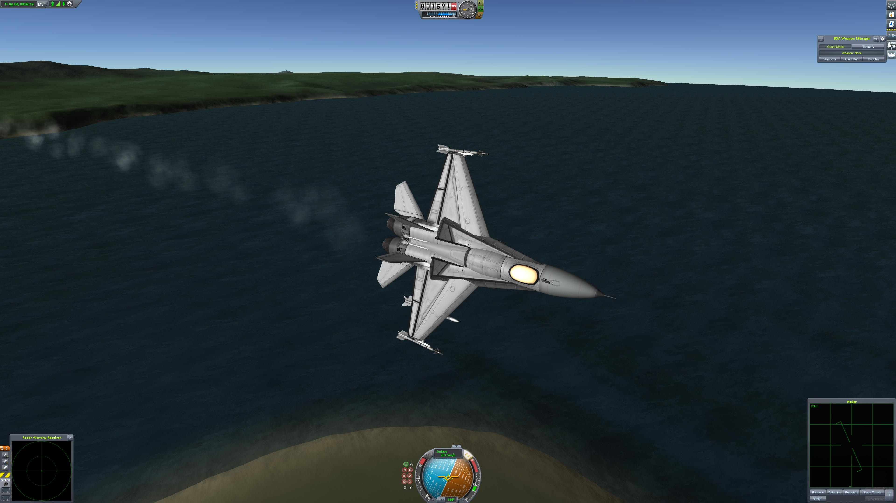

Players create rockets, rovers, spaceplanes, and aircraft in order to complete in-game missions or self-directed goals whilst (hopefully) not crashing. Once built the player launches their creation and (attempt to) control it whilst managing their fuel, thrust, velocity, aerodyanmics, orbital manuevers and much more.
Why Is Game So Famous?
The hysterical nature of being able to stick your pilot on the side of a self-designed F-1 going Mach 2(that you're suprised even made it off the runway) and the ability to create almost anything within the physics engine draws players from around the world.


VAB
First and foremost, the VAB or Vehicle Assembly Building along with the Spaceplane Hangar are the 2 buildings in which players can create their *ahem*explosive devices*ahem* inventions to test and *hopefully* make fly. This is essentially where all flying machines get designed and tweaked with the help of the large selection of over 500 parts.
Rovers
Including Rovers which allow players to explore the surface of celestial bodies they land on and perform science activities.
Spaceplanes
Spaceplanes that can difficult to create but reward the player with low flight cost.
Aircraft
Or just regular old airplanes and jets... But don't forget this is Kerbal Space Program so your plane will usually end up looking like this instead...
Space Stations
And finally the pinnacle of kerbal technology... The Space Station!!!
Today we've been lucky enough to observe the outpost in its natural habitat; undergoing rapid unplanned disassembly and atmospheric insertion where we will get to see the station perform its newest breakthrough technology near the end... Lithobraking!!!